와우 포인트 적용하기
청중이 "와" 하는 순간을 만드는 기법 38가지. 기법마다 덱 하나(표지 · 크게 보기 · 쓰는 법)라서, 누르면 실제로 움직이는 모습부터 봅니다.
드러내기·이동 4가지
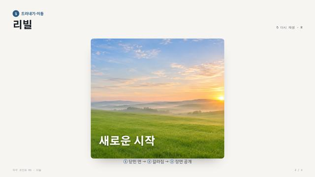
리빌가렸다가 열기가려 둔 만큼, 열릴 때 커진다.
이럴 때 · "다음 단계로 넘어갑니다" · "새로 시작합니다"
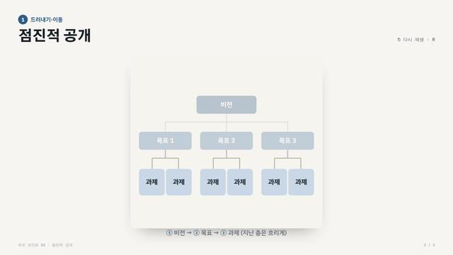
점진적 공개한 층씩청중이 발표자 속도로 읽게 된다.
이럴 때 · "구조가 복잡하지만 따라오세요"
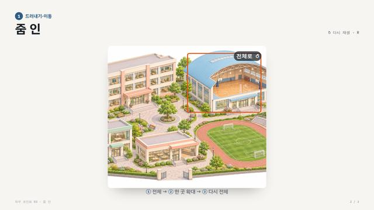
줌 인전체 → 부분지도를 먼저 쥐여 주고 한 곳으로 데려간다.
이럴 때 · "구조가 복잡하지만 따라오세요"
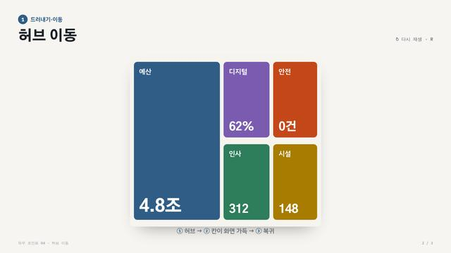
허브 이동목차가 곧 지도고른 곳으로 들어갔다 나온다. 질문에 바로 답한다.
대비·전환 3가지
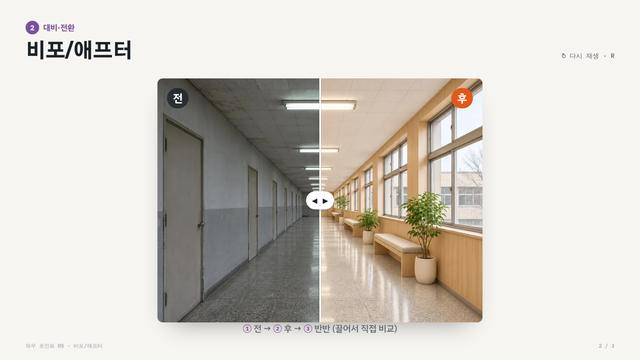
비포/애프터같은 구도, 바뀐 것만구도가 같으면 눈은 바뀐 곳만 본다.
이럴 때 · "이만큼 바뀝니다"
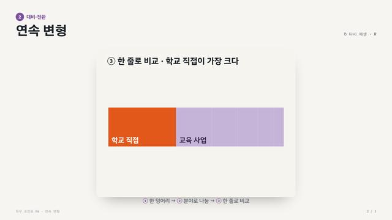
연속 변형모핑같은 도형이 모양만 바꿔 '같은 돈'임을 증명한다.
이럴 때 · "이만큼 바뀝니다"
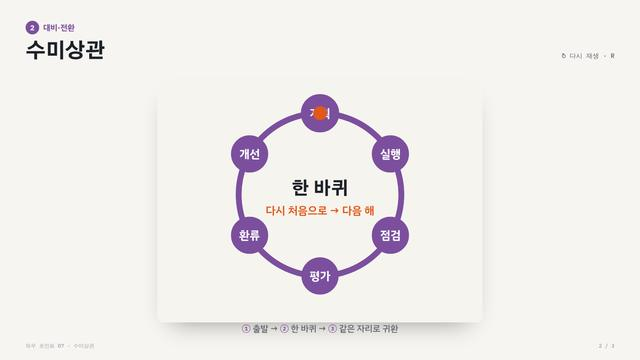
수미상관처음으로 돌아오기첫 장면으로 돌아오면 이야기가 닫힌다.
이럴 때 · "해마다 돌며 나아집니다"
숫자 체감 4가지
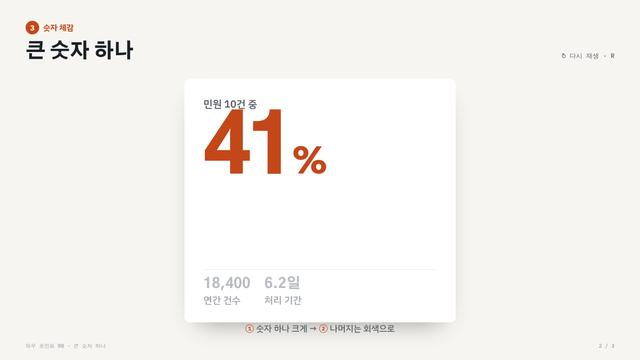
큰 숫자 하나주인공 하나하나만 크게. 나머지는 조연으로 물린다.
이럴 때 · "이 숫자가 심각합니다" · "이게 결론입니다"
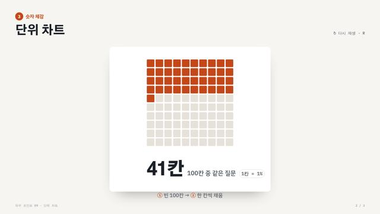
단위 차트셀 수 있게41%를 '100칸 중 41칸'으로 바꿔 몸으로 느끼게.
이럴 때 · "이 숫자가 심각합니다"
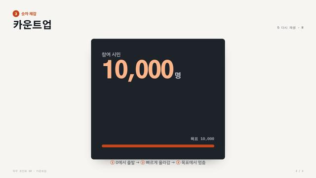
카운트업올라가는 숫자올라가는 동안 긴장이 쌓이고, 멈출 때 터진다.
이럴 때 · "목표에 닿았습니다(닿을 겁니다)"
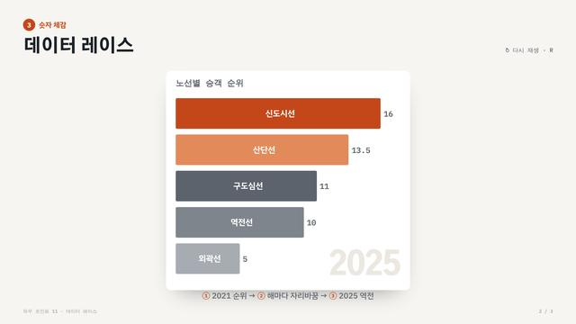
데이터 레이스순위 경주순위가 뒤집히는 순간이 곧 드라마다.
이럴 때 · "순위·흐름이 뒤집혔습니다"
은유·세계관 4가지
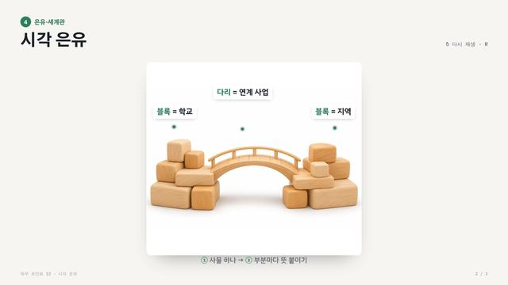
시각 은유개념을 사물로추상적인 정책이 사물 하나로 한 번에 이해된다.
이럴 때 · "여럿이 함께 만듭니다"
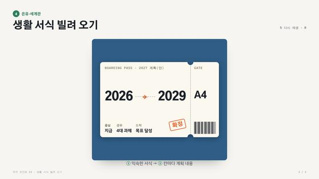
생활 서식 빌려 오기탑승권·영수증익숙한 틀을 엉뚱한 자리에 두면 눈이 멈춘다.
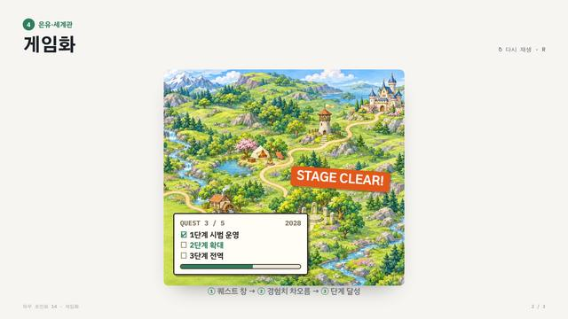
게임화과제 = 퀘스트다년 계획을 레벨처럼 '깨 나가는' 이야기로.
이럴 때 · "목표에 닿았습니다(닿을 겁니다)"
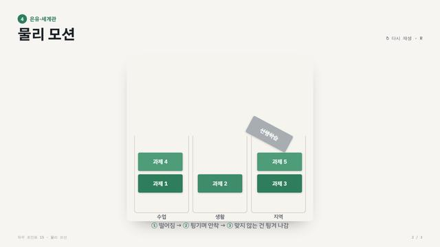
물리 모션튕김·낙하·연쇄무게와 충돌이 '진짜 같다'는 실감을 준다.
이럴 때 · "여럿이 함께 만듭니다"
감각·형식 4가지
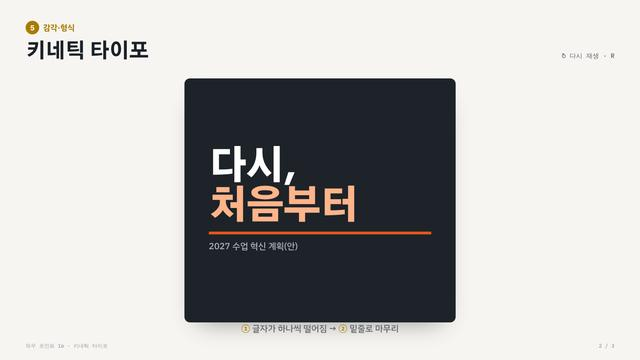
키네틱 타이포글자가 연출그림 없이 글자만으로 장면이 된다.
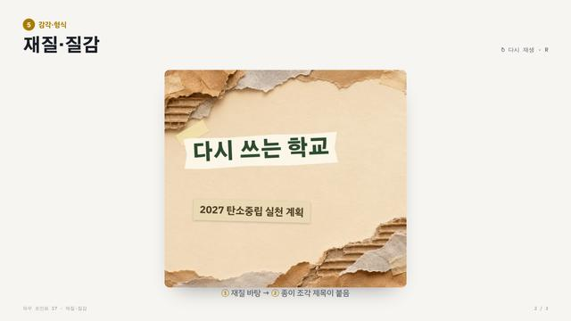
재질·질감화면에 손맛매끈한 화면 사이에서 만질 수 있을 것 같은 장면.
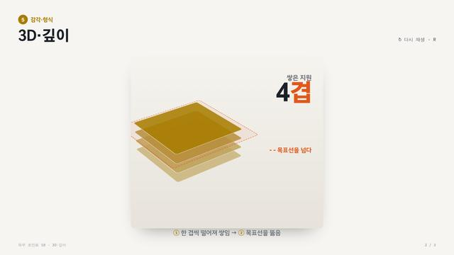
3D·깊이쌓임을 진짜 층으로평면 장표들 사이에서 깊이 하나가 튀어 오른다.
이럴 때 · "해마다 돌며 나아집니다"
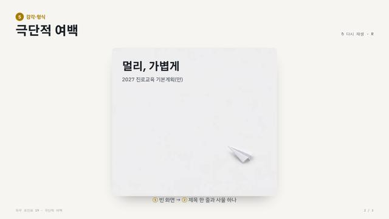
극단적 여백비울수록 강해짐남은 하나에 시선이 전부 모인다.
이럴 때 · "새로 시작합니다"
소리가 보이는 모션 5가지
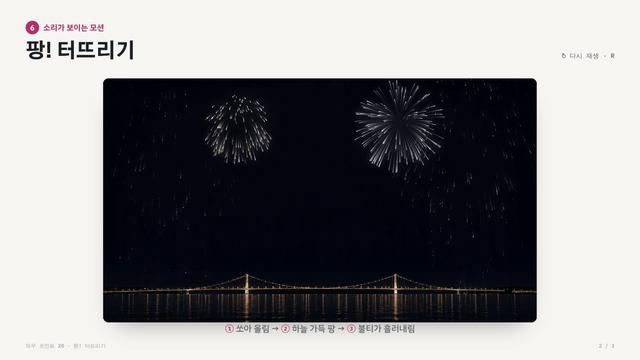
팡! 터뜨리기하늘 가득 불꽃터지는 순간 화면이 축제가 된다.
이럴 때 · "목표에 닿았습니다(닿을 겁니다)"
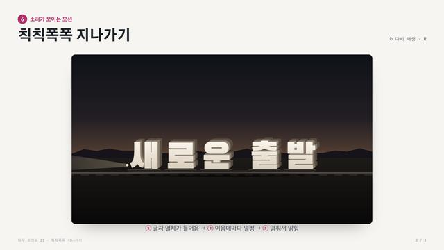
칙칙폭폭 지나가기음절 한 량씩입체 글자 하나하나가 객차가 되어 들어와 멈추며 읽힌다.
이럴 때 · "다음 단계로 넘어갑니다"
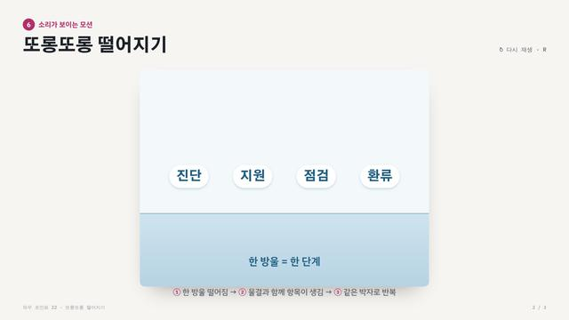
또롱또롱 떨어지기한 방울씩같은 박자로 하나씩 생겨 개수와 순서가 몸에 남는다.
이럴 때 · "구조가 복잡하지만 따라오세요"
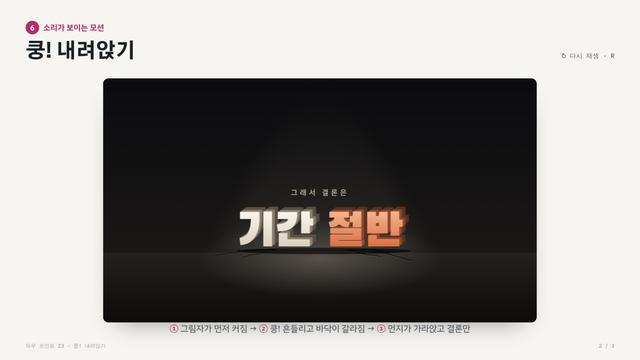
쿵! 내려앉기무게로 결론무거운 착지와 흔들림이 '이게 결론'이라고 알린다.
이럴 때 · "이게 결론입니다"
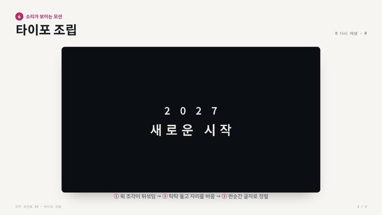
타이포 조립탁탁 맞춰지는 글자"무슨 글자지?" 하다가 한순간 맞춰지며 "아!" 하게 된다.
이럴 때 · "새로 시작합니다"
흐름·시선 4가지
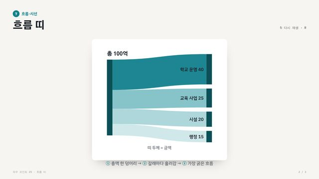
흐름 띠어디로 가는지돈과 사람이 어디로 가는지 눈으로 따라간다.
이럴 때 · "돈 · 사람이 어디로 가는지 보세요"
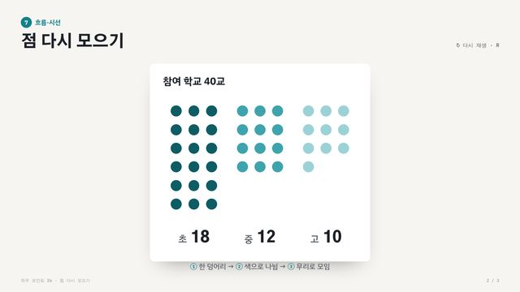
점 다시 모으기섞였다가 갈라지기섞여 있던 점이 무리로 갈라지는 순간 비율이 보인다.
이럴 때 · "돈 · 사람이 어디로 가는지 보세요"
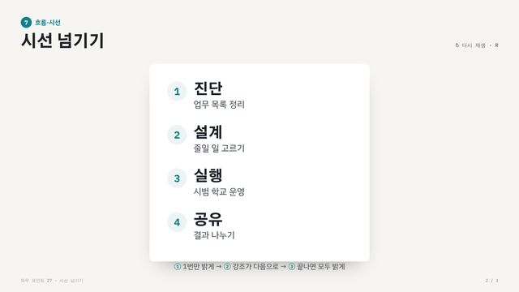
시선 넘기기지금 말하는 곳만지금 말하는 항목만 밝다. 청중이 길을 잃지 않는다.
이럴 때 · "구조가 복잡하지만 따라오세요"
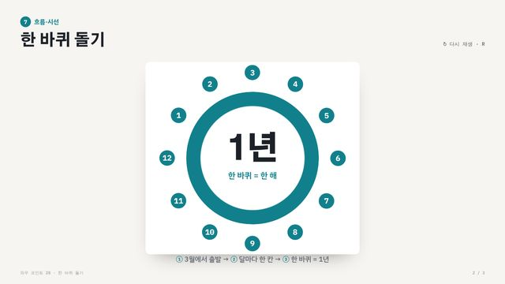
한 바퀴 돌기한 해가 지나감시계가 한 바퀴 돌면 '1년 동안'이 몸으로 느껴진다.
이럴 때 · "해마다 돌며 나아집니다"
표시·뒤집기 3가지
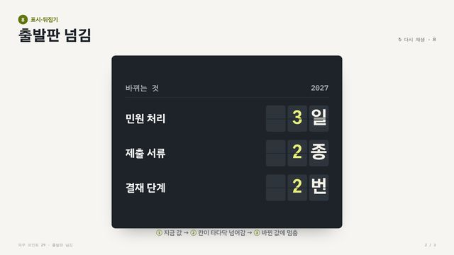
출발판 넘김타다닥 바뀌는 숫자판숫자판이 넘어가는 소리가 들리는 듯해 '바뀌었다'가 남는다.
이럴 때 · "이만큼 바뀝니다"
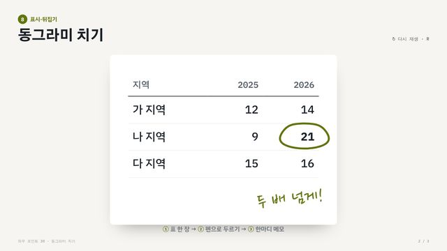
동그라미 치기펜으로 짚어 주기발표자가 펜으로 짚어 주는 듯해 시선이 바로 그 숫자로 간다.
이럴 때 · "바로 이 숫자입니다" · "짐작해 보세요"
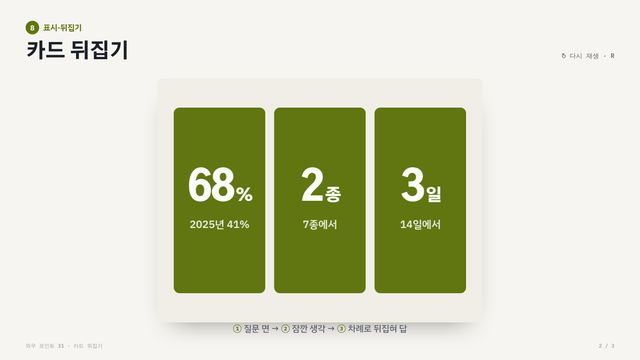
카드 뒤집기질문 → 답답을 먼저 짐작해 본 사람은 그 답을 오래 기억한다.
이럴 때 · "바로 이 숫자입니다" · "짐작해 보세요"
장면 잇기 4가지
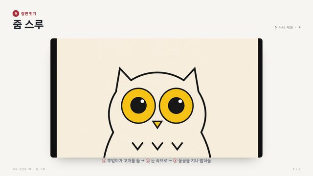
줌 스루구멍을 지나 다음 장면동그란 눈 → 더 큰 원 → 검은 동공. 형태를 따라 들어가니 설명 없이 다음 장면에 닿는다.
이럴 때 · "다음 단계로 넘어갑니다"
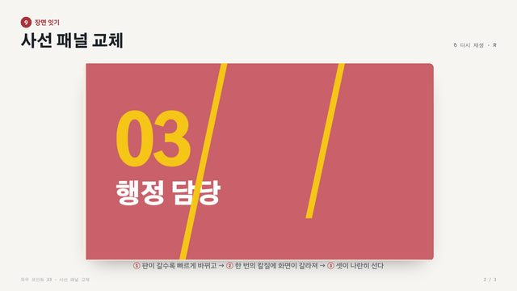
사선 패널 교체쓸고 지나가며 바뀜같은 틀에서 판만 쓸려 가니, 여럿을 차례로 보여도 어수선하지 않다.
이럴 때 · "여럿을 차례로 소개합니다"
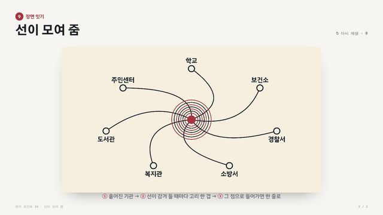
선이 모여 줌한 점으로 모이기여러 갈래가 한 곳으로 모이는 것을 보고, 그 한 곳으로 들어간다.
이럴 때 · "여럿이 함께 만듭니다"
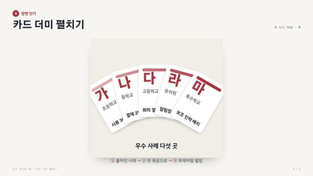
카드 더미 펼치기모았다가 부채처럼흩어진 것이 한 묶음이 되었다가 펼쳐지면, '여럿이 한 이야기'라는 게 보인다.
이럴 때 · "여럿을 차례로 소개합니다"
형태·렌즈 3가지
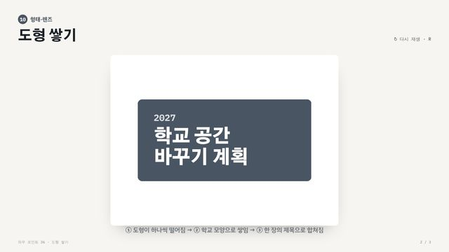
도형 쌓기쌓여서 하나로작은 조각이 모여 하나가 되는 걸 보면, 계획이 '여럿을 묶은 것'으로 읽힌다.
이럴 때 · "여럿이 함께 만듭니다"
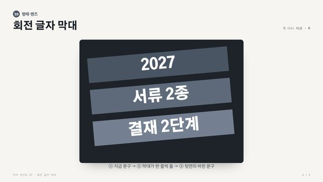
회전 글자 막대돌면 다른 말같은 자리에서 막대가 돌아 다른 면이 나오니, 무엇이 바뀌었는지 짝으로 보인다.
이럴 때 · "이만큼 바뀝니다"
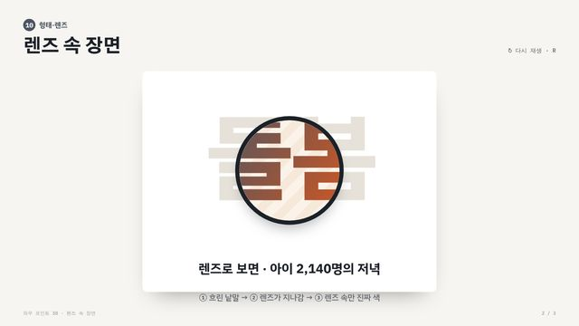
렌즈 속 장면들여다보면 다른 것겉으로 보던 낱말을 렌즈로 들여다보면, 그 안의 사람 · 숫자가 보인다.
이럴 때 · "바로 이 숫자입니다" · "짐작해 보세요"
38가지를 한 덱에 모아 보려면 한눈에 보기(13장).